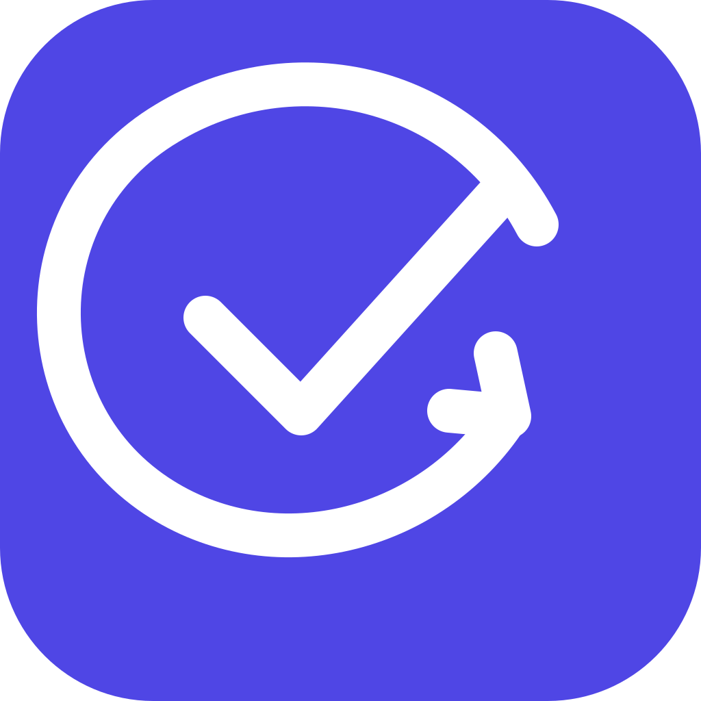

AI HACK 2026 ｜ 自律型エージェント
POINT3
AI が会話を巡回し、
決定と成果物の矛盾を指摘。
人が「確認して」と頼む前に。会議で決めたことと、保存された成果物を自分で突き合わせて、根拠つきで知らせる。
得意先から増量の要望が来ても、今期の見込みは 450 から変更しないでください。

巡回して関係する決定をコードで絞り込み、残った 1 組だけを Claude Opus が判定。誤検知 0 の評価セットを毎回通す
エージェントは通知と提案まで。タスク・成果物・Wiki の変更は人が承認する
チャットで理由が共有されていれば確信度を下げる。「黙って数字が変わった」ときに一番強く指摘する
 GitHub
GitHub Zenn 記事
Zenn 記事